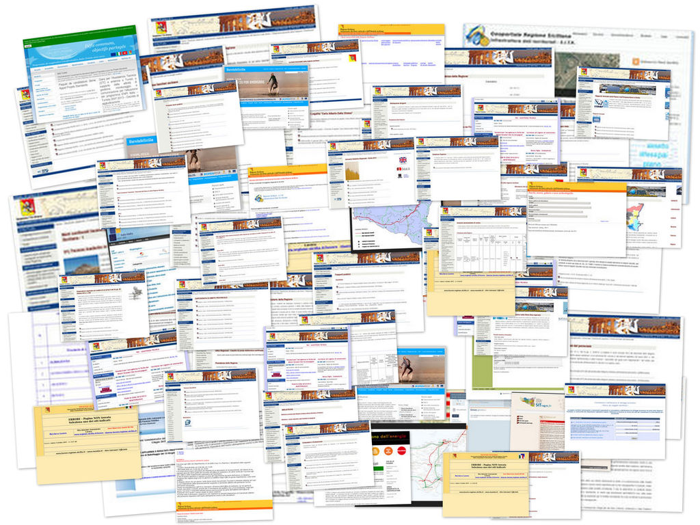

Il "NON-Portale Open Data della Regione Siciliana" è un unico punto di accesso ai dati (in formato aperto e non) contenuti in diversi siti istituzionali e portali della Regione Siciliana.
È un non portale perché non è il portale Open Data ufficiale della Regione Siciliana (che ad oggi non esiste) e perché la maggior parte dei dati non sono in formato "open".
Obiettivo del NON-portale è di fungere da stimolo per l’amministrazione regionale siciliana affinché si attivi per rilasciare i dati che possiede in formato aperto e possa creare prima possibile il portale Open Data, rispondendo così alle esigenze informative dei cittadini (per esempio in termini di accesso ai servizi, progetti, ecc.) e della Pubblica Amministrazione, così come già avviene da tempo in molte regioni italiane.
Il NON-Portale è stato realizzato dal gruppo di lavoro di ODS 2015 sui dati regionali, avviato da Marco Alfano e composto da Joska Arena, Cristiano Longo, Alessandro Pernice e Giuseppe Reale, che ha effettuato uno screening sui dati pubblicati attualmente dalla Regione Siciliana (in formato open e non), riscontrando il grave ritardo in cui si trova la Sicilia rispetto a molte altre regioni italiane, sia da un punto di vista normativo che culturale e organizzativo.
Ha quindi proceduto a creare un catalogo dei dati regionali ritenuti di maggior interesse per la collettività e a realizzare il NON-Portale per consentire un facile accesso a tali dati
L'homepage del portale è stata realizzata da Andrea Borruso a partire dal lavoro fatto per Petrusino.
Grazie a Maurizio Foderà per lo stimolo nel realizzare questo progetto e a Davide Taibi per la consulenza sulla parte Linked Data